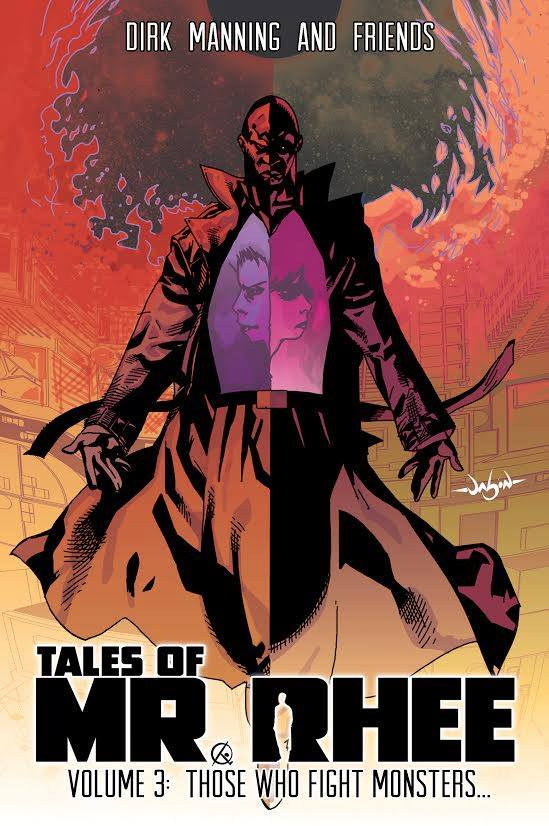
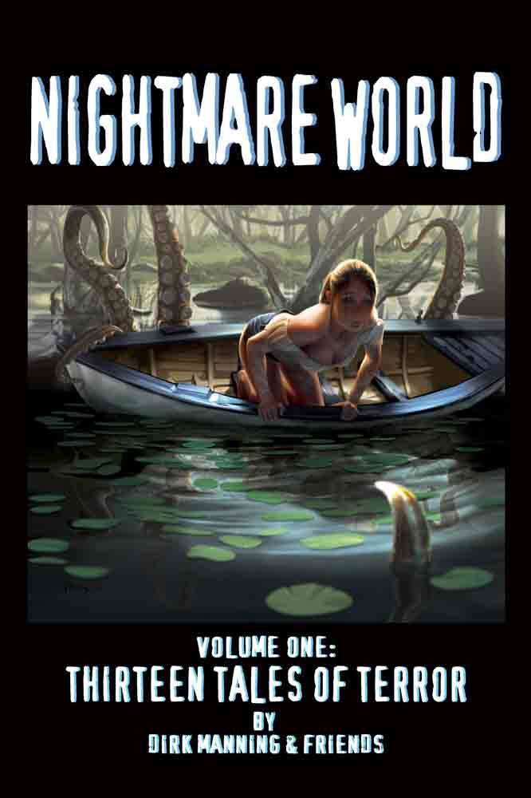
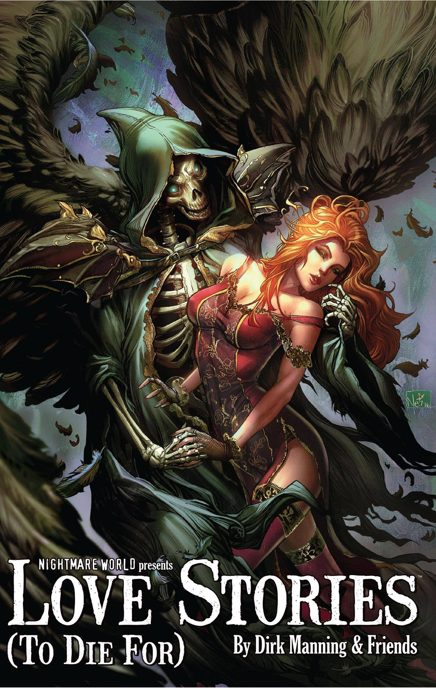
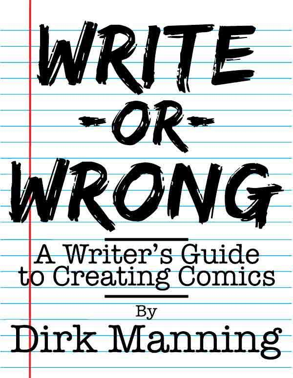

Special Guests
Each year Animarathon invites special guests to Bowling Green Ohio to interact with fans and speak about their work. Previous Animarathon Special Guests have included Voice Actors and Actresses, Artists, Writers, Online Personas, and more!
This year Animarathon will be featuring Ben Diskin, GeePM, Dirk Manning, Sheikahchica Cosplay, Blitzkreig Cosplay, and Caroline Krunchy!
Celebrity Creators
Accomplished Actor: Ben Diskin
He is Nuhmbah One!
Ben Diskin is a voice actor from Los Angeles. He's been in the VO industry for over 25 years and has voiced a multitude of characters in video games, anime, and western animation.
Anime
- JoJo's Bizarre Adventures as Joseph Joestar
- Sailor Moon as Gurio Umino
- Naruto as Sai
- Erased as Satoru Fujinuma
- Bleach as Szayelaporro Granz
- Kill La Kill as Kaneo Takarada
- K as Misaki Yata
- Sword Art Online as Death Gun
Video Games
- Kingdom Hearts as Young Xehanort
- Fire Emblem Fates as Jakob, Saizo and Hayato
- Shin Megami Tensei: Devil Survivor 2 as Daichi Shijima
Western Animation
- Codename Kids Next Door as Numbah One and Numbah Two
- Hey Arnold! as Eugene Horowitz
- The Spectacular Spider Man as Venom
- Miraculous: Tales of the Ladybug and Cat Noir as Nino
Other Roles
Ben Diskin has also played roles in One Punch Man, Star Wars: The Clone Wars, Avatar the Last Airbender, Kindergarten Cop, Potion Shop , Felix the Cat , and Regular Show In Space.
Streaming Superstar: GeePM
Who is GeePM?
Coming from a 8-Year background of game Live-Streaming, Games Repainted member GeePM hails from humble Northwest Ohio.
Staring Roles
Best known for his "Miiverse is Hell", "Roblox is Hell" and "Games Repainted" series, he's an energetic friendly and patented "Soft Buff Boy" who's goal is to help make you smile at least once during streaming!
Miiverse is Hell Live!
Be sure to check out GeePM's "Miiverse is Hell Live!" panel and join in on the weird, and strange mysteries of the Miiverse!
Macabre Maestro: Dirk Manning
Dirk Manning is best known as the writer/creator of comic series such as the
Don't let Dirk’s penchant for writing horror comics and his tongue-in-cheek publicity photo with the black hat and scarf fool you, as he’s a very amicable and approachable creator who’s known as one of the “must visit” creators in Artist Alley across the convention circuit. Whether you’re a fan of well-executed horror or an aspiring creator looking for advice regarding how to “break-in” to the comic industry, your experience at the convention won’t be complete without stopping by Dirk Manning’s table to chat with him and become familiar with his work.
Read More Dirk!
More of Dirk’s gripping and exciting stories can be read in comic titles such as The Legend Of OZ: The Wicked West (Aspen/Big Dog Ink) and Dia De Los Muertos (Image Comics/Shadowline) among various other anthologies. Dirk has also written short films for the horror film anthology series BLACKBOX TV (YouTube) and prose stories the RPG series Clockwork: Dominion (Reliquary Game Studios). Dirk always has copies of his work with him at his table – and autographs/book signings are always free!
When not on the road Dirk lives on the Internet and can be found online at www.DirkManning.com.
TALES OF MR. RHEE
After Armageddon the world is mostly back to normal - Or is it?
Discover the Mystery surrounding Mr. Rhee in this Cthulhu Noir series by Dirk Manning
NIGHTMARE WORLD
Experience the terror of Nightmare World!
Nightmare World is a Psychological Horror enthralling horror anthology series by Dirk Manning and Friends!
Love Stories (To Die For)
What would love drive you to do, even in the face of death?
An anthology of gripping stories by Dirk Manning and Friends.
WRITE OR WRONG
Write Or Wrong: A Writers Guide to Creating Comics is Drik Manning's ongoing inspirational column/book collection.
If you've ever thought about writing comics, Write or Wrong contains key insights to guide you through your journey!
Celebrity Cosplayers
Champion Cosplayer: Sheikahchica Cosplay
Going by the name Sheikahchica Cosplay, Lindsay has been cosplaying since 2009, with 65+ costumes (including variations) under her belt. She has been featured on numerous websites, and most recently appeared in the Women VS Cosplay 2017 calendar as Catwoman. She is an artist, writer, and gamer, previously writing for the former Examiner.com as their Cleveland Girl Gamer Examiner. She currently works with the Tangent Bound Network as a con correspondent.
One of Lindsay’s biggest passions is giving back through costuming, raising funds for charity, and volunteering through the 501st Legion, the Rebel Legion, Heroes Alliance, and the Columbus and Cleveland Ghostbusters. Lindsay believes that CAUSEplay is about the impact you leave behind - encouraging others to follow their dreams, being a hero to those who need one, and leaving smiles in your wake.
Charitable Cosplayer: Blitzkreig Cosplay
Andrew is a writer/cosplayer from central Ohio who goes by the name Blitzkrieg Cosplay. He's been costuming and attending conventions since 2013. Often times he attends cons on behalf of The Tangent-Bound Network as one of their official con correspondents, giving reviews on their flagship show, The Tangent-Bound Podcast.
His main passion is giving back through his cosplay or, rather, causeplay. Through his membership with the Heroes Alliance, Rebel Legion, 501st Legion and Columbus Ghostbusters, Andrew supports wonderful causes such as Make a Wish and Autism Speaks. He is a big believer in cosplay equality and believes that cosplay is about having fun and exploring one's self through creativity and imagination.
Creative Cosplayer: Caroline Krunchy
Caroline is a graphic designer and wedding photographer from central Ohio. She's been in the convention circuit for a decade, and making her own costumes for the last seven years.
In college, while attending as a full-time student and varsity swimmer, she also found the time to open up her own business in cosplay and prop commissions.
The convention scene was where she found a place to hone her talents and passion that now makes her the person she is today. In addition to attending conventions, she also helps staff many others in the mid-west, including the cosplay department at Matsuricon, the photosuite at Otakon, and many others. She not only believes in Cosplay is Not Consent and Cosplay Equality, but also Create Don't Compete.
Cosplay was where she found her confidence, creative outlet, and loving friends and she hopes the community will be a safe haven for all other cosplayers.